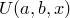

:
Appendices
4 Appendices
A Other Applications of PyXPlot
A.1 Conversion of JPEG Images to PostScript
A.2 Inserting Equations in Powerpoint Presentations
A.3 Delivering Talks in PyXPlot
A.3.1 Setting up Infrastructure
A.3.2 Writing A Short Example Talk
A.3.3 Delivering your Talk
B Summary of Differences Between PyXPlot and Gnuplot
B.1 The Typesetting of Text
B.2 Complex Numbers
B.3 The Multiplot Environment
B.4 Plots with Multiple Axes
B.5 Plotting Parametric Functions
B.6 Displaying Times and Dates on Axes
C The
fit
Command: Mathematical Details
C.1 Notation
C.2 The Probability Density Function
C.3 Estimating the Error in 
C.4 The Covariance Matrix
C.5 The Correlation Matrix
C.6 Finding
D ChangeLog
2010 May 19: PyXPlot 0.8.0
2009 May 24: PyXPlot 0.7.1
2008 Oct 14: PyXPlot 0.7.0
2007 Feb 26: PyXPlot 0.6.3
2006 Sep 09: PyXPlot 0.5.8
E Index